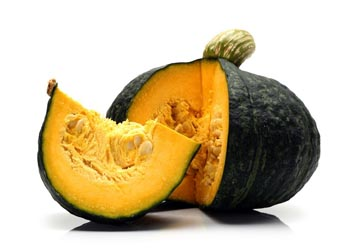

El zapallo, también conocido como calabaza, es un vegetal muy versátil y nutritivo que se utiliza en muchas culturas de todo el mundo. Este vegetal de temporada es rico en vitaminas, minerales y fibra, y es muy fácil de preparar. En esta página, exploraremos el origen del zapallo, sus beneficios para la salud y las diferentes formas de prepararlo y disfrutarlo en tu dieta.

Añade color y sabor a tus platos
con el zapallo y aprovecha sus numerosos
beneficios para la salud.
Origen e historia del zapallo
El zapallo se originó en América Central hace unos 7.000 años y ha sido un alimento básico en muchas culturas indígenas de América del Norte y del Sur. Hoy en día, el zapallo se cultiva en todo el mundo y se utiliza en una gran variedad de platos y productos alimentarios.
Beneficios para la salud del zapallo
El zapallo es una excelente fuente de vitaminas y minerales, incluyendo vitamina A, vitamina C, potasio y magnesio. También es rico en fibra, lo que ayuda a regular el tránsito intestinal y promueve una digestión saludable. Además, los carotenoides presentes en el zapallo tienen propiedades antioxidantes y antiinflamatorias, y se ha demostrado que ayudan a prevenir enfermedades crónicas como el cáncer y las enfermedades cardiovasculares.
Formas de preparar y disfrutar el zapallo
El zapallo se puede disfrutar de muchas formas diferentes, desde sopas y guisos hasta puré de zapallo y postres como la tarta de calabaza. También se puede agregar a ensaladas, salteados y asados para añadir sabor y textura. Además, las semillas de zapallo son una excelente fuente de proteínas, grasas saludables y minerales como el zinc, y se pueden comer tostadas o como ingrediente en barras de granola o mezclas de frutos secos.